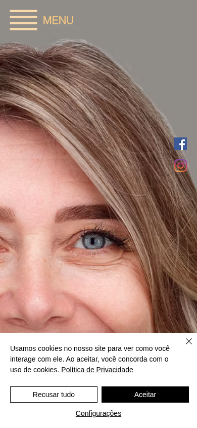
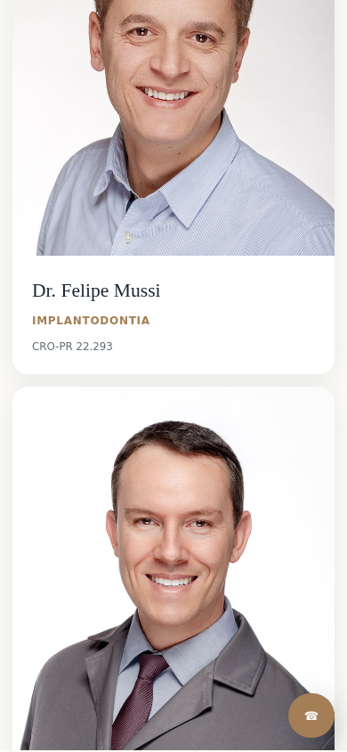

Mensagem mais precisa
Apresentar logo no início o que a Arch oferece, onde está e como iniciar o atendimento.
Proposta de evolução do site institucional para tornar a experiência mais clara, confiável e orientada ao agendamento — sem perder a identidade elegante construída pela clínica.
Leitura do cenário
A marca, as imagens da clínica e o posicionamento premium já oferecem uma boa base. O principal ganho está em organizar essa força visual em uma jornada objetiva, especialmente no celular.
Apresentar logo no início o que a Arch oferece, onde está e como iniciar o atendimento.
Substituir áreas vazias, texto cortado e hierarquia dispersa por seções responsivas e escaneáveis.
Manter telefone, endereço e chamadas para agendamento visíveis nos pontos de decisão.
Comparação verificada · mobile 390×844
O mesmo primeiro viewport mostra o ganho de hierarquia, leitura e acesso ao agendamento sem descaracterizar a Arch.

Conteúdo recortado e percurso de contato disperso no celular.

Marca, posicionamento, telefone e tratamentos organizados desde a primeira tela.
Uma jornada responsiva que apresenta a clínica, orienta por necessidade e mantém canais confirmados acessíveis.
O conceito preserva o azul profundo, os tons metálicos quentes, o símbolo e as fotografias oficiais. A evolução vem do contraste, da tipografia, do respiro e de uma hierarquia mais madura.
Hero com posicionamento claro e acesso imediato ao agendamento.
Tratamentos organizados por necessidade, com linguagem simples.
Clínica, equipe e informações profissionais em destaque.
Telefone, mapa e contato apresentados sem obstáculos.
Escopo sugerido
Uma página institucional enxuta, rápida e preparada para receber novas campanhas ou conteúdos no futuro.
A implantação deve ser acompanhada por indicadores simples e comparáveis.
Mensurar ligações, abertura do mapa e demais canais oficiais de atendimento.
Acompanhar engajamento, profundidade de navegação e abandono nas principais seções.
Integrar boas práticas de conteúdo e consistência dos dados da clínica para SEO local.
O protótipo de produção preserva a marca Arch e demonstra a nova jornada completa em um único documento responsivo.
Abrir experiência proposta